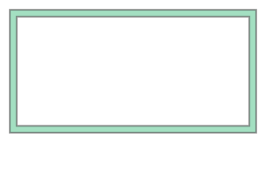

import shapely
from shapely import Polygon, PointSpatial I
Introduction (5.2)
Intro: roadmap
- motivation
- textbook
requirements.txt- types of geo data
- attribute data
- storage for geo data
Motivation
- For many datasets, the fundamental unit of observation is geographic
- a place
- a road
- a building
- a county
- By the end of this section (two classes), you will be able to
- Represent geographic vector objects in Python using the
shapelylibrary - Understand the basic data structures and methods of geopandas GeoDataFrames
- Execute common geometric operations with points, lines and polygons
- Spatial join operations
- Represent geographic vector objects in Python using the
Textbook
Introduction to Python for Geographic Data Analysis by Henrikki Tenkanen, Vuokko Heikinheimo & David Whipp
Book has three parts:
- Intro to Python (you know this already)
- Intro to Geographical Information Systems (GIS) with Python
- Case Studies (this part is actually not written yet)
We are going to teach material from Chapters 5 and 6 in Section 2.
requirements.txt
(We will elaborate more on what this file is in minilesson on Wednesday)
shapely – Manipulation and analysis of geometric objects in the Cartesian plane.
geopandas – Geometric objects nested within a standard pandas data frame
Vector vs raster data

Vector data records points, lines and shapes. Raster data records pixels.
Discussion question – brainstorm examples of each type of data.
Examples of vector data

The numbers are called well-known text: a version of the data which is easily interpretable to a human. We will discuss how to read these shortly!
Attribute data
In virtually every example, we will associate attribute data with vectors – these are what might appear in a table in a standard dataframe, but now the data is associated with a point, line, or shape.
Examples of data that would associate with a point:
- particulate matter (pollution)
- temperature
- altitude
Discussion question: what type of data would you associate with…
- …a building?
- …a geographic area?
Intro: summary
- vector data
- raster data
- attribute data
- The spatial lectures here will focus on vector and attribute data because of time limitations.
Representing geographic data in vector format (6.1)
geo data in vectors: roadmap
PointLineStringPolygon
Within each data type, we will cover creation, Well Known Text (WKT), and coordinates.
Note: when working with spatial data, we typically will not start by creating the shapes themselves. But it is important to understand them because they form the basis of spatial data and all spatial transformation is just manipulating the underlying vectors.
Point: creating geometries
from shapely import Point
point = Point(2.2, 4.2)
point
Point: Well Known Text (WKT) representation
print(point) #extracts WKT
point.wkt #gets WKT directly
point3D = Point(9.26, -2.456, 0.57)
print(point3D)POINT (2.2 4.2)
POINT Z (9.26 -2.456 0.57)WKTgives you a plaintext representation of where the point is.- It contrasts with Well Known Binary (
WKB) which stores geo data in the way which is most efficient for the computer.- Wikipedia has some nice examples of how the same point is stored by WKT and WKB.
Point: Coordinate representation
type(point.coords)shapely.coords.CoordinateSequencelist(point.coords)[(2.2, 4.2)]When the object is a Point, the WKT looks very similar to the coordinates. As the objects get more complicated, the formatting of WKT starts to deviate from coordinates.
Point: extraction methods
print(point.x)2.2print(point.xy)(array('d', [2.2]), array('d', [4.2]))LineString: creating geometries
from shapely import Point, LineString
point1 = Point(2.2, 4.2)
point2 = Point(7.2, -25.1)
point3 = Point(9.26, -2.456)
line = LineString([point1, point2, point3])
line_from_tuples = LineString([(2.2, 4.2), (7.2, -25.1), (9.26, -2.456)])
line
LineString: creation syntax
These two input methods produce the same output. No “right” way. Use whichever way is more convenient in your application.
line = LineString([point1, point2, point3])
line_from_tuples = LineString([(2.2, 4.2), (7.2, -25.1), (9.26, -2.456)])LineString discussion questions
- What output should we expect if we run
print(line)? Write down your guess on your MUD card before you run it at the computer. - How can you access the Well Known Text representation?
LineString coordinate representation
list(line.coords)[(2.2, 4.2), (7.2, -25.1), (9.26, -2.456)]LineString attributes
xcoords = list(line.xy[0])
ycoords = list(line.xy[1])
print(xcoords)
print(ycoords)[2.2, 7.2, 9.26]
[4.2, -25.1, -2.456]LineString attributes, continued
Length is the sum of distances between consecutive points.
length = line.length
print(f"Length of our line: {length:.2f} units")Length of our line: 52.46 unitsPolygon: creating geometries
from shapely import Polygon
poly = Polygon([point1, point2, point3])
poly
Polygon: WKT
poly.wkt'POLYGON ((2.2 4.2, 7.2 -25.1, 9.26 -2.456, 2.2 4.2))'Note the double parentheses. In contrast:
line.wkt'LINESTRING (2.2 4.2, 7.2 -25.1, 9.26 -2.456)'Polygon: attributes
print("Polygon centroid: ", poly.centroid)
poly.centroidPolygon centroid: POINT (6.22 -7.785333333333334)print("Polygon Area: ", poly.area)
poly.area Polygon Area: 86.78986.789print("Polygon Bounding Box: ", poly.bounds)
poly.boundsPolygon Bounding Box: (2.2, -25.1, 9.26, 4.2)(2.2, -25.1, 9.26, 4.2)print("Polygon Exterior: ", poly.exterior)
poly.exteriorPolygon Exterior: LINEARRING (2.2 4.2, 7.2 -25.1, 9.26 -2.456, 2.2 4.2)
LinearRing is similar to a LineString, but it it must be: 1. a closed loop 2. cannot intersect itself
Polygons can be easily formed from LinearRings but not all LineStrings can be transformed into polygons.
print("Polygon Exterior Length: ", poly.exterior.length)
poly.exterior.lengthPolygon Exterior Length: 62.1639519999655362.16395199996553Polygon: example II
exterior = [(-180, 90), (-180, -90), (180, -90), (180, 90)]
poly_without_hole = Polygon(shell=exterior)
poly_without_hole
linestring_from_exterior = LineString(exterior)
linestring_from_exteriorPolygon: example II with a hole
# Define the hole coordinates (a single hole in this case)
holes_coordinates = [[(-170, 80), (-170, -80), (170, -80), (170, 80)]]
poly_with_hole = Polygon(shell=exterior, holes=holes_coordinates)
poly_with_hole
geo data in vectors: summary
| Data type | Well-known text (WKT) |
|---|---|
Point |
(25 60.5) |
LineString |
(24.5 61, 25 60.5, 25.5 61) |
Polygon |
((24.5 61, 25 60.5, 25.5 61, 24.5 61)) |
Methods
- any type:
.coords,.x,.xy,.wkt LineStringorPolygon:.centroid,.lengthPolygon:.bounds,.area,.exterior